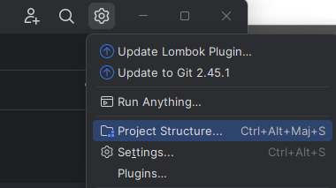

3. Le déroulement du workshop
Ce workshop est une session BYOD (Bring Your Own Device), donc vous utilisez votre propre ordinateur portable.
|
Ce workshop est écrit pour Windows. Si vous utilisez un autre OS, des ajustements pourront être nécessaires. Le répertoire utilisé dans les exercices de ce workshop est par défaut |
En préambule, il est nécessaire d’installer les différents outils requis pour la mise en œuvre de ce workshop.
3.1. Les modalités
Vous pouvez suivre pas-à-pas les instructions fournies dans ce document.
Ce workshop se veut être aussi explicite que possible. Le niveau de détail doit permettre que votre travail consiste à suivre les instructions par vous-même.
Il est composé de plusieurs grandes parties :
-
partie 1 : les évolutions dans la syntaxe
-
partie 2 : les évolutions dans les API
-
partie 3 : l’outillage du JDK
Chaque partie est composée de labs abordant chacun une fonctionnalité particulière.
Chaque lab est autonome. Vous être donc libre de choisir les labs que vous allez réaliser :
-
soit dans l’ordre fourni dans le workshop
-
soit dans l’ordre de votre choix en fonction de vos préférences ou connaissances
Parfois un lab utilise une fonctionnalité détaillée dans un autre lab : dans ce cas, un lien vers ce lab est fourni.
Chaque action à réaliser est détaillée dans un bloc identifié avec l’icône
3.2. Les fonctionnalités en preview
Depuis l’utilisation du nouveau modèle de release des versions de Java après Java 9, de nombreuses fonctionnalités sont proposées en Preview avant une mise à disposition en standard. Elles sont définies dans la JEP 12.
Une fonctionnalité en preview est une nouvelle fonctionnalité du langage Java, de la machine virtuelle Java ou de l’API Java SE qui est entièrement spécifiée, entièrement mise en œuvre, mais pas encore standard. Elle est proposée dans une version du JDK afin de permettre aux développeurs de l’utiliser et de fournir du feedback. Selon le feedback, elle peut alors évoluer après plusieurs versions pour devenir standard ou être retirée. Il n’y a pas de garantie sur la compatibilité des fonctionnalités proposées en preview avec la version précédente.
L’utilisation de fonctionnalités en preview impose plusieurs points :
-
il faut explicitement les activer à la compilation et à l’exécution en utilisant l’option
--enable-preview -
il faut en plus préciser le niveau de compatibilité du code source à la compilation
3.2.1. Avec le JDK
Il faut utiliser l’option --enable-preview avec les outils javac, java, jshell et javadoc
Il faut en plus préciser le niveau de compatibilité du code source avec les options --release ou -source avec l’outil javac
C:\java>javac --enable-preview --release 22 MonApp.java
C:\java>java --enable-preview MonApp3.2.2. Avec Eclipse
Par défaut, les fonctionnalités en preview ne sont pas activées et provoquent des erreurs de compilation.
Pour les activer, il faut modifier les propriétés de compilation du projet en utilisant le menu contextuel "Properties" du projet et en sélectionnant "Java Compiler".
Il faut cocher "Enable project specific settings" et cocher "Enable preview features for Java 22".
| Eclipse ne permet l’activation des fonctionnalités en preview que pour la version du JDK utilisée par le projet. |
3.2.3. Avec IntelliJ Idea
Ouvrir la boite de dialogue « Project structure », soit :
-
en cliquant sur le bouton dans la barre d’outils et en sélectionnant « Project Structure »
 -
ou en utilisant l’option « File | Project structure… » du menu principal
-
ou en utilisant la combinaison de touches Ctrl+Alt+Shift+S
Dans les paramètres du projet (Project Settings/Project) :
-
sélectionner le SDK sur un « JDK 22 »
-
pour le niveau de langage, sélectionner « 22 (Preview) - Statements before super(), string templates (2nd preview) etc »

3.2.4. Avec Maven
La configuration se fait dans le fichier pom.xml pour chaque plugin qui le requiert.
<build>
<plugins>
<plugin>
<groupId>org.apache.maven.plugins</groupId>
<artifactId>maven-compiler-plugin</artifactId>
<configuration>
<source>22</source>
<target>22</target>
<compilerArgs>
--enable-preview
</compilerArgs>
</configuration>
</plugin>
</plugins>
</build>3.3. Configuration des options de la JVM
Certaines fonctionnalités présentées dans les labs font intervenir des options de la JVM. Celles-ci s’ajoutent dans la ligne de commande java utilisée pour lancer l’application.
-Xmx512mjava -Xmx512m fr.sciam.workshop.javase.Main